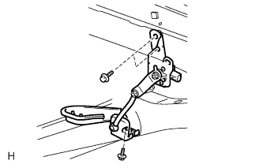
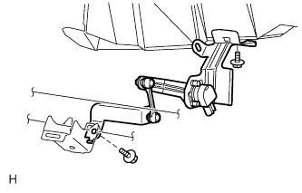

ハイトコントロールセンサASSY RR 取り外し
印刷
1. ハイトコントロール センサSUB-ASSY RR RH取りはずし（駆動方式FF）

コネクターを切り離す。
ボルト3本をはずし、ハイトコントロールセンサRR RHを取りはずす。
2. ハイトコントロール センサSUB-ASSY RR RH取りはずし（駆動方式４ＷＤ）

クランプおよびコネクターを切り離す。
ボルト2本をはずし、ハイトコントロールセンサRR RHを取りはずす。